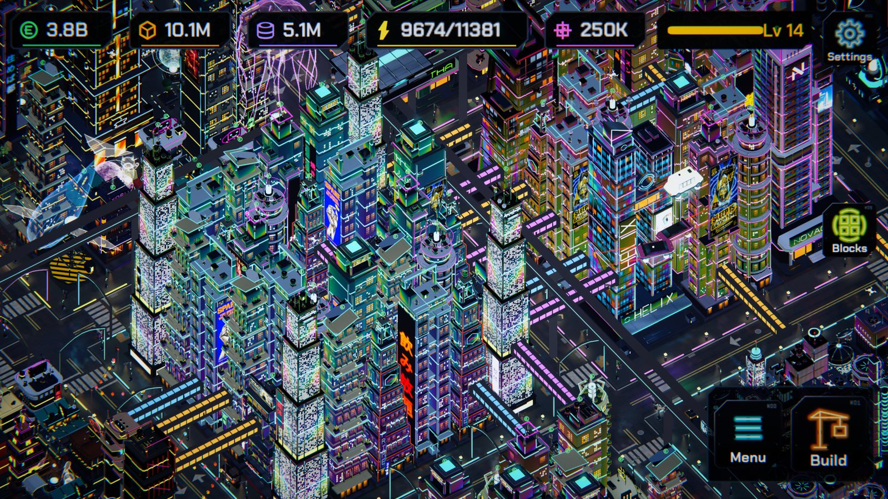
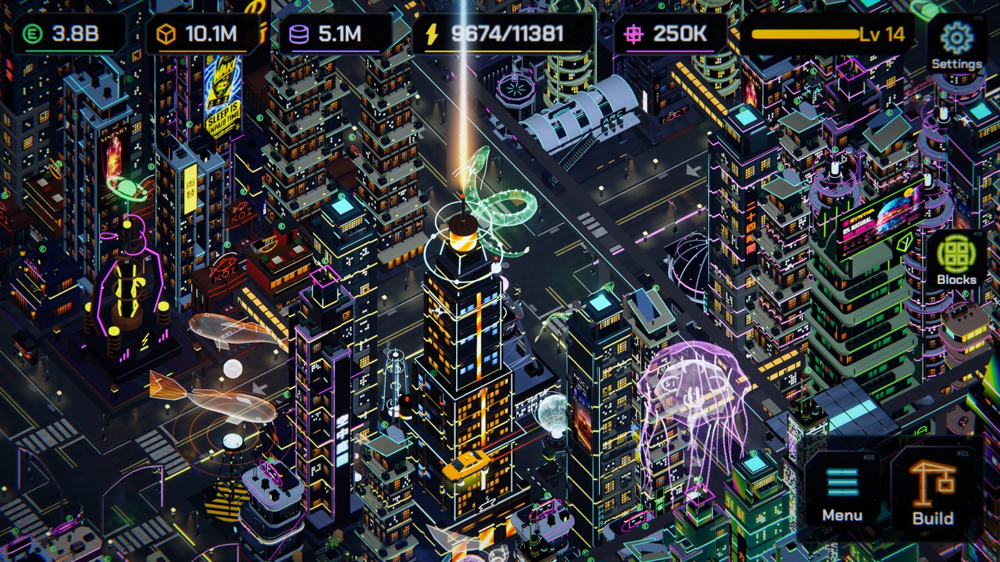
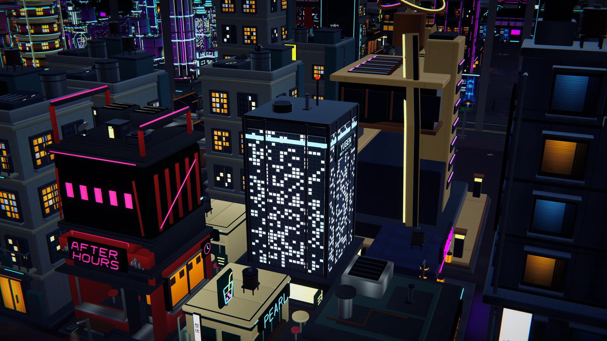
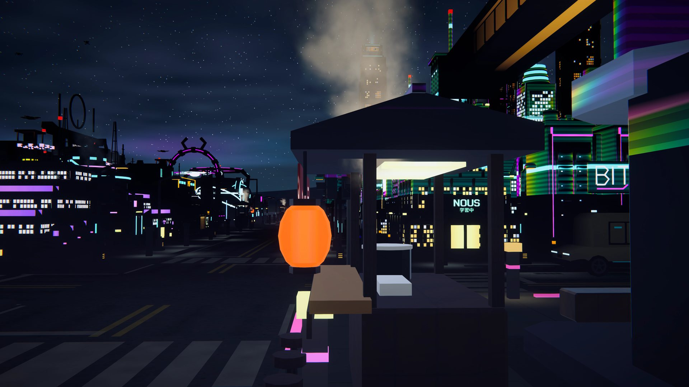
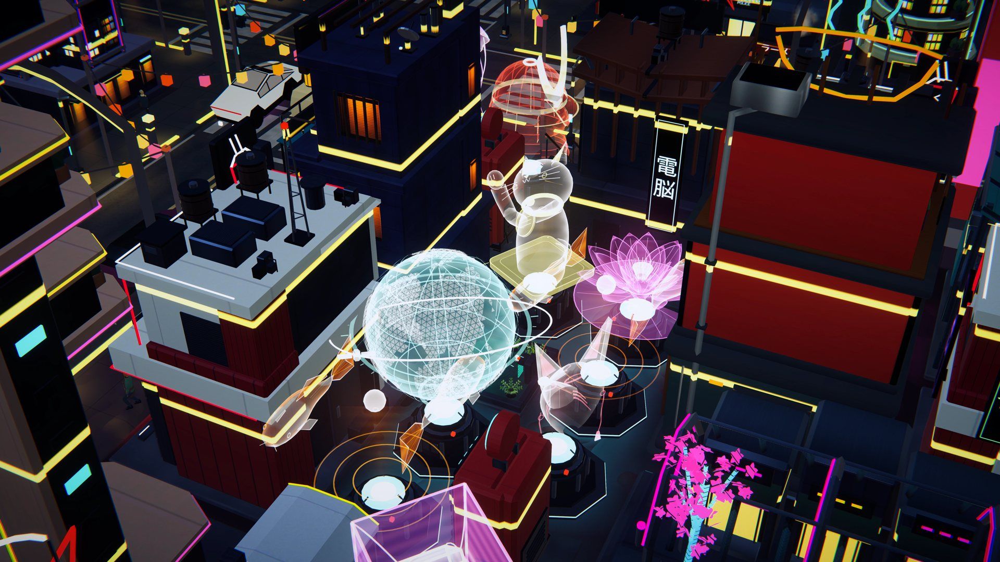
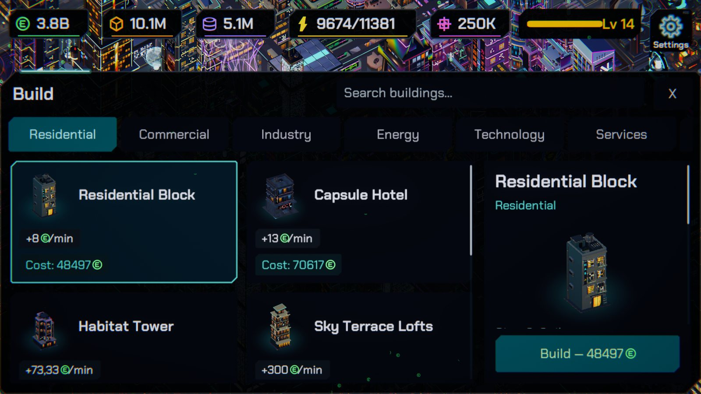
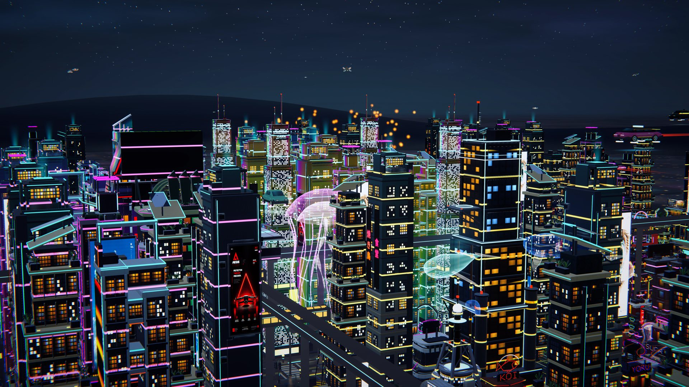
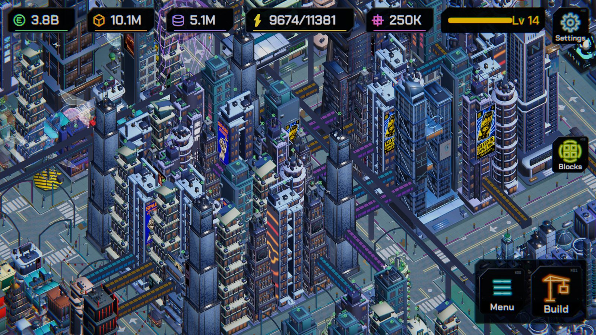

Launch trailer
What you do
Build and collect
Place shops, factories and towers, tap to collect what they earn, and watch construction rise with scaffolding and tower cranes. Your city earns while you play and while you're away.
Upgrade the skyline
More than 90 buildings, most with four tiers of unique architecture. Every upgrade and every finished district visibly changes the skyline.
Build your way
Districts and blocks reward how you build — density, mix, housing next to shops. Bonuses, never penalties: there is no single correct city.
A city with a life of its own
A day and night cycle where the neon switches on building by building, acid rain, flying cars, delivery drones, a monorail, 3D holograms and citizens with their own stories.
Research and rivals
Research new technologies, sign contracts with rival corporations and throw festivals that fill the sky with lanterns and searchlights.
Never finished, never lost
When a city is complete, found the next one. Your old city keeps standing and you can walk back into it any time — or ride through it in a car, a drone or the train.
Screenshots








FAQ
What kind of game is Neon Forge?
A relaxing cyberpunk city builder with incremental progression: you build shops, collect their earnings, upgrade them through four tiers and expand into dark districts that light up as you grow.
Which platforms is it on?
Android, on Google Play. A PC version for Steam is in preparation.
Does it have ads or in-app purchases?
No. Neon Forge is a one-time purchase with no ads and no in-app purchases. The optional premium currency is only earned by playing.
Can I play offline?
Yes. The whole game plays offline.
Which languages does it support?
English, Spanish, German, French, Italian and Portuguese.